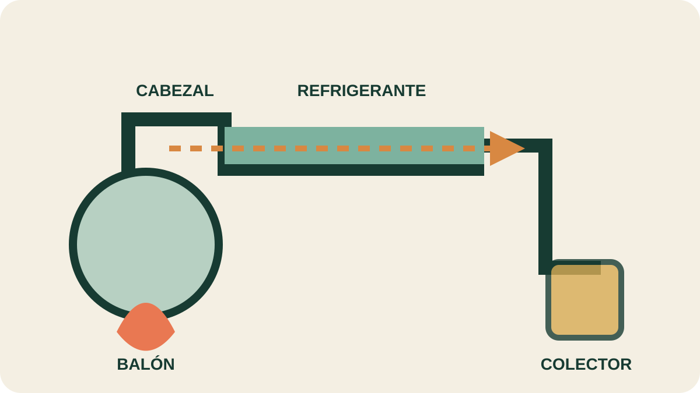

Módulo 16 · 30 minutos
Destilación: el corazón del oficio
Al terminar, vas a poder nombrar las piezas principales de un montaje y describir el recorrido completo del vapor.
El viaje de lo volátil
Destillare nombraba el acto de separar por calor una sustancia volátil de otras más fijas y enfriar luego su vapor para devolverlo al estado líquido. Siglos después, la escena sigue siendo reconocible: un recipiente calentado, un conducto, una zona fría y una gota que cae en el colector.
Separar sin crear otra sustancia
La destilación es un proceso físico. Sus componentes cambian de estado y de ubicación, pero no se convierten deliberadamente en sustancias nuevas. Evaporación y condensación separan una mezcla aprovechando diferentes puntos de ebullición.
La clave para las esencias es que muchas sustancias de ebullición alta, calentadas con agua, pasan a vapor cerca de la temperatura a la que hierve esta. Son volátiles con el vapor de agua y pueden obtenerse sin llevarlas solas a temperaturas destructivas.
El punto de ebullición es una . No cambia porque usemos más o menos material, aunque sí responde a la presión. La explica por qué el vapor de agua y el compuesto aromático pueden contribuir juntos a la presión necesaria.
Las piezas cuentan el proceso
El organiza tres zonas: generación de vapor, enfriamiento y recolección. En el montaje de laboratorio, la mezcla ocupa un matraz esférico o balón. Mechero, trípode, malla y soporte aportan calor y estabilidad.
El cabezal conecta el balón con el recorrido y puede incorporar un termómetro. El vapor entra luego al . Su tubo interior puede ser liso, en espiral o presentar estrangulamientos. Finalmente, una pieza acodada y una alargadera conducen el destilado al matraz colector.
El agua fría sube, el vapor avanza
Al alcanzar la ebullición, el vapor se vuelve apreciable. Una fracción condensa en paredes y termómetro; la mayor parte llega al refrigerante. Allí una corriente de agua fría asciende por la camisa y retira calor. El vapor se condensa y escurre hacia el colector.
Que el agua de refrigeración ascienda ayuda a llenar la camisa y mantener el intercambio térmico. El sentido del vapor es otro: sale del balón, cruza el cabezal y avanza hasta la salida. Dos corrientes diferentes colaboran sin mezclarse.

Recorré el aparato con el dedo
Empezá en el balón y seguí la flecha aromática hasta el colector. Después seguí la corriente de agua fría en sentido contrario. Nombrá las cinco piezas principales y localizá dónde ocurre cada cambio de estado.
Tres precauciones que cambian el resultado
Un trozo de o la agitación magnética evita que el líquido hierva a saltos. Debe incorporarse antes de calentar. El balón no se llena mucho más de la mitad: el vapor necesita espacio y el contenido no debe alcanzar el cabezal.
Si hay sólido depositado en el fondo, una fuente de calor localizada puede producir saltos violentos. En ese caso se emplea un baño líquido para distribuir el calentamiento. Antes de abrir o corregir el montaje, se detiene el proceso y se deja enfriar.
La industria puede trabajar de forma discontinua, por cargas, o continua. La escala cambia, pero el relato físico permanece: cargar, calentar, transportar vapor, enfriar y separar el producto condensado.
Actividad · Una molécula cuenta su viaje
Escribí un relato breve en primera persona desde una glándula de la hoja hasta el colector. Incluí balón, presión de vapor, cabezal, refrigerante y condensación. Después transformá el relato en cinco pasos operativos, uno por pieza.
Un corazón con varias formas
Ya conocemos el recorrido, pero no existe un único montaje. La distancia entre puntos de ebullición, la sensibilidad al calor y la naturaleza del material determinan qué destilación conviene elegir.
Guardá esta estación
Cuando puedas explicar la idea central con tus propias palabras, marcá el módulo como completado.